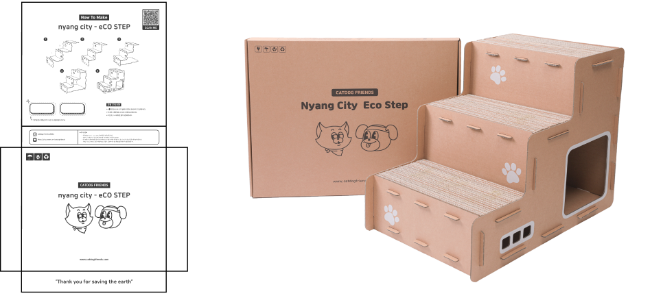

Catdog FreindsDeisgn Poroject
캣독프렌즈 브랜딩 프로젝트
기여도 : 개인 프로젝트 (100%)
툴 : Figma, Photoshop, Visual Studio Code
Overview
"캣독프렌즈"는 2021년, 대학교 졸업을 준비하며 다닌 스타트업에서 제작한 브랜드입니다. 스타트업 특성상 신입으로서 다양한 업무를 경험할 수 있었고, 그 과정에서 브랜드의 브랜딩, 캐릭터 디자인, 제품 디자인 등 여러 분야를 담당했습니다. 특히 라이브 커머스 방송까지 참여하며 폭넓은 역할을 맡았습니다.
Character Design
언제나 에너지 넘치는 긍정적인 강아지 홀리와 만사가 귀찮은 몰리는 처음에는 완전히 상반된 성격으로 자주 싸우곤 했습니다. 그러나 홀리의 적극적인 애정 공세 덕분에 몰리는 자연스럽게 마음을 열었고, 둘은 어느새 둘도 없는 친구가 되었습니다. 비록 여전히 티격태격하는 모습을 보이지만, 함께 있는 시간이 가장 즐거운 홀리와 몰리. 과연 이들은 언제쯤 싸움 없이 지낼 수 있을까요?
Product & Pakage
고양이가 박스를 좋아하는 특성을 고려하여, 골판지를 이용한 고양이 멀티 하우스를 제작해 보았습니다. 이 제품은 계단, 하우스, 스크래쳐가 결합된 멀티 하우스로, 제품의 남는 공간을 효과적으로 활용하였습니다. 또한, 조립 시 편리함을 고려해 앞뒤 구분 없이 사용할 수 있도록 설계되었습니다.
관절 보호를 위한 계단
아늑한 숨숨집
스트레스 해소를 위한 스크래쳐

친환경 소재인 골판지를 사용하여 포장박스도 골판지로 제작, 비닐 포장을 최소화했습니다. 또한, 단조로운 포장박스에 조립 방법과 브랜드 캐릭터를 활용하여 독특하고 개성 있는 패키지 디자인을 완성했습니다.
Web Design
캐릭터를 중심으로 한 브랜드인 만큼, 캐릭터와 조화를 이룰 수 있는 방향을 고민했습니다. 귀엽고 통통 튀는 느낌의 폰트와 라인 일러스트를 활용하여, 디자인의 통일성을 강조했습니다.
- 01 라인 포인트를 활용한 캐릭터와의 조화
- 02 개성 있는 폰트로 강조한 유니크한 매력
- 03 디자인의 통일성을 고려한 균형 잡힌 구성
Design System
Typography

다이내믹한 분위기의 TT Trailers Trial Variable 폰트와 둥글고 귀여운 스타일의 Mochiy Pop One 폰트를 활용했습니다. 또한, 강아지가 구분할 수 있는 파란색과 노란색을 메인 컬러로 설정하여 디자인의 특징을 강조했습니다.
Catdog Freinds 웹디자인 보러가기
Review
살면서 이렇게 다양한 경험을 해볼 수 있을까? 싶었던 기간이었습니다. 하나의 브랜드를 처음부터 만들어가며 브랜딩, 캐릭터 디자인, 제품 디자인 등 여러 분야를 직접 담당할 수 있었습니다. 특히 브랜드의 캐릭터와 제품을 구상하고 제작하는 과정은 애착이 많이 갔던 경험이었고, 첫 주문이 들어왔을 때의 감동은 아직도 잊을 수 없습니다. 단순히 디자인 업무뿐만 아니라, 라이브 커머스 방송을 직접 진행하고, 방송용 인테리어까지 구성하는 등 정말 다채로운 경험을 할 수 있었던 점이 인상 깊었습니다.
한 가지 역할에 국한되지 않고, 다양한 업무를 수행해야 했지만 덕분에 디자인뿐만 아니라 마케팅, 운영 등 브랜드를 전반적으로 이해하는 시각을 키울 수 있었습니다. 힘든 순간도 있었지만, 한 브랜드가 성장하는 과정을 함께하며 많은 것을 배울 수 있었던 값진 시간이었습니다.